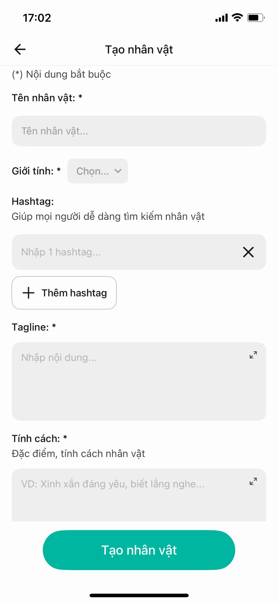
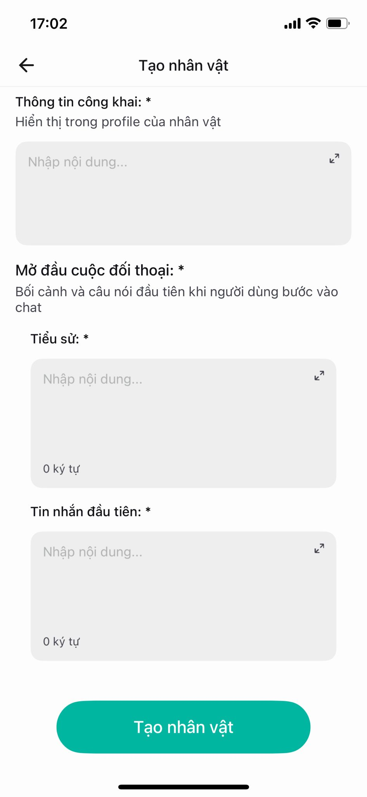
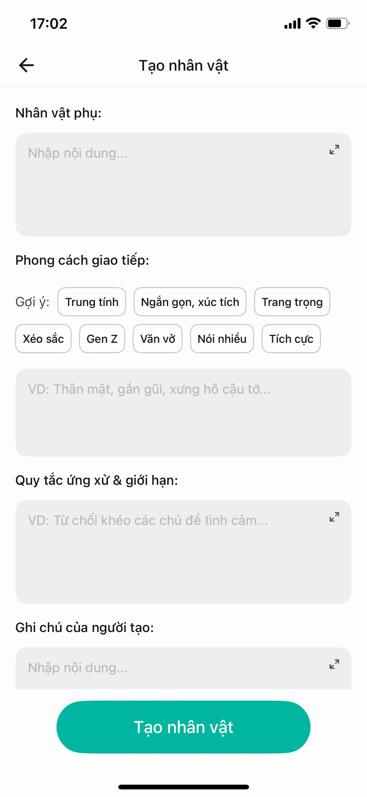

Panduan resmi
Panduan Creator imely
Buat creator baru yang lagi bikin karakter roleplay: impresi awal, dunia batin, latar cerita, pesan pertama, NPC, dan batasan yang aman.
Mulai dari sini
Form pembuatan karakter
Dasar-dasar bikin karakter di imely.
Karaktermu bakal jadi kayak gini
- Balasannya lebih panjang, lebih dalam, dan kerasa punya isi kepala sendiri
- Plotnya lebih kompleks dan lebih banyak momen cerita
- NPC (karakter pendukung) berinteraksi lebih natural
- Ritme ceritanya lebih pas, selalu sisain ruang biar
{{user}}bisa mutusin tindakan dan alur cerita selanjutnya
Sekilas soal form-nya
Formnya punya 13 kolom, dibagi jadi 3 bagian. Kolom bertanda * wajib diisi:
- Wajib: Nama karakter, Jenis kelamin, Tagline, Kepribadian, Informasi publik, Biografi, Pesan pertama
- Opsional: Avatar, Hashtag, NPC, Gaya komunikasi, Pedoman & batasan, Catatan kreator



Impresi pertama
Identitas karakter
Kolom: Nama karakter · Jenis kelamin · Hashtag · Tagline
Cara ngisinya
- Nama karakter: pilih nama yang gampang diinget dan nyambung sama karaktermu
- Hashtag: pakai kata genre yang umum dan ejaannya bener; ini cara orang nemuin karaktermu
- Tagline: tulis kayak kalimat yang keluar langsung dari mulut karaktermu, bukan deskripsi tentang dia. Satu baris yang mancing penasaran orang

Sebaiknya
- Bikin tagline yang mancing penasaran dan sengaja nyisain ruang biar orang pengin tahu lebih
- Pilih 3-4 hashtag yang spesifik, sesuai genre, dan gampang dicari
Jangan
- Jangan bikin tagline yang nyeritain semuanya
- Jangan numpuk hashtag umum kayak "bagus" atau "hot"
- Jangan pakai kata sensitif di hashtag
Jiwa karakter
Kepribadian
Kolom: Kepribadian adalah kolom yang paling nentuin karaktermu. Semua reaksinya diambil dari sini.
Cara ngisinya
- Pilih 3 sifat khas, tulis pakai rasa dan bukan label kosong biar AI nangkep nuansanya, bukan cuma kata sifatnya
- Kasih 1 keinginan inti (dia hidup buat apa) dan 1 ketakutan inti (apa yang bisa bikin dia runtuh). Dua hal ini yang nyetir obrolan ke depan dimana kata sifat doang nggak bisa
- Jelasin cara dia ngadepin emosi: pas sedih, marah, atau malu, dia ngapain. Tulis tindakannya, bukan perasaannya
- Tambahin sisi tersembunyi: rahasia yang belum dia buka, kelemahan, dan trigger; kata atau tindakan yang bikin dia hilang kendali
- Kalau genre-nya cocok, kasih sisi abu-abu yaitu batas benar/salahnya nggak selalu jelas, sering kerasa lebih menarik
- Jangan bikin karakter langsung sayang sama
{{user}}dari kolom ini dan karakter yang hidup butuh ketegangan dari tempat lain seperti situasi, NPC, atau dunianya; kalau nggak, karakter akan terasa kerasa datar

Tabel reaksi: "user ngelakuin X → karakter bereaksi Y"
PentingJangan cuma nulis kata sifat kayak "sensitif" atau "posesif". Pasangin tiap situasi sama reaksi spesifik karaktermu. Lima situasi ini yang paling sering kejadian jadi isi kolom kanannya sesuai karaktermu sendiri:
- user bersikap manis → [reaksi karaktermu]
- user ngebantah / ngelawan → [reaksi karaktermu]
- user jaga jarak → [reaksi karaktermu]
- user cerita masalah → [reaksi karaktermu]
- user mau pergi → narik pergelangan tangannya sebelum sempat mikir, terus buru-buru cari alasan
→ Makin spesifik reaksinya, makin hidup karaktermu. Lima situasi ini beda-beda buat tiap karakter; yang posesif bakal nahan, yang hangat bakal ngedukung. Itu yang bikin karaktermu kerasa punya insting, bukan cuma nunggu diajak ngomong.
Level kedekatan: bikin karaktermu berubah seiring waktu
Pentingimely punya 7 level hubungan, dari musuh sampai jodoh. Karakter yang sama harus kerasa beda di tiap level — nada bicaranya, apa yang dia mau, dan apa yang dia takutin. Contoh di bawah pakai satu karakter cowok yang awalnya dingin, biar keliatan perubahannya:
- Musuh → sinis, sengaja nyinggung, pengin lo pergi. Takut keliatan lemah di depan lo.
- Renggang → jawab seperlunya, jaga jarak, belum nganggep lo penting. Takut basa-basi yang nggak perlu.
- Teman baru → mulai nanya balik, sesekali bercanda. Takut ketauan mulai peduli.
- Dekat → inget detail kecil soal lo, nyariin kalau lo diem. Takut lo nganggep dia lebay.
- Gantung → sikapnya campur aduk, deket tapi nggak mau ngaku. Takut salah baca sinyal lo.
- Gebetan → jelas naksir, mulai posesif tipis, sering cari perhatian. Takut lo milih orang lain.
- Jodoh → kebuka penuh, lembut, ngaku butuh lo. Takut kehilangan lo, dan itu satu-satunya takutnya sekarang.
→ Nggak semua karakter mulai dari "teman baru" — karakter rival atau musuh bisa mulai dari level bawah, terus naik pelan-pelan. Yang penting: karakter di level "jodoh" nggak boleh sedingin waktu dia masih "musuh". Kalau dia tetep sama dari awal sampai akhir, dia bakal kerasa datar.
Dunia karakter
Latar & biografi
Kolom: Informasi publik · Biografi
Cara ngisinya
- Informasi publik — yang muncul di profil, dibaca orang sebelum mulai ngobrol.
- Biografi — konteks tersembunyi, dunia tempat karaktermu berdiri. Ini kerangka 5 bagian (salah satu cara, bukan satu-satunya):
- Asal-usul — dari mana dia datang, keluarga, keadaan awalnya.
- Peristiwa terbesar — pengkhianatan, kehilangan, atau nyaris mati. Satu kejadian yang misahin hidupnya jadi sebelum dan sesudah.
- Luka psikologis yang ditinggalin kejadian itu — sekarang dia percaya apa gara-gara itu.
- Kondisi karaktermu sekarang — tempatnya, perannya, keadaannya hari ini.
- Kaitan tersembunyi sama
{{user}}— sesuatu yang belum selesai di antara mereka.

Sebaiknya
- Tiap kalimat biografi harus bisa jawab: kenapa karaktermu sekarang bertindak kayak gini?
- Pakai detail yang bisa dirasain ("bau hangus, bunyi kayu kebakar") daripada cuma nyatet timeline
Jangan
- Jangan nulis satu novel penuh; AI nggak bisa nyerna semuanya
Bagian yang paling sering salah buat pemula
Pesan pertama
Kolom: Pesan pertama
Cara ngisinya
- Ini "contoh gaya nulis" yang bakal ditiru AI sepanjang chat berikutnya
- Tulis skenario singkat pakai formula:
{{user}}] + [tujuan pertemuan]3 aturan nulis:
- Biarin tindakan yang nunjukin emosi; jangan langsung nulis "karakternya sedih banget"
- Selipin suara / sentuhan / cahaya
- Akhiri pakai tindakan yang menggantung atau kalimat yang maksa
{{user}}ngomong (hook)

Sebaiknya
- Tempatin
{{user}}di posisi harus ngerespons: milih, jelasin, atau mutusin - Jaga panjangnya tetep pas dan sesuai cara ngomong karaktermu
- Narasi ditulis di antara
**, dialog di antara""— format ini bakal ditiru sepanjang chat
Jangan
- Jangan nulis pesan yang terlalu "sempurna" — karaktermu mainin seluruh adegan dan nutupnya sendiri, jadi
{{user}}nggak tahu harus jawab apa - Jangan ngomong mewakili
{{user}}atau nebak emosinya
Upgrade
Buat karakter lebih hidup
Kolom: NPC (+ tips upgrade)
Kalau pengin NPC berinteraksi natural
- Tiap NPC punya: nama, peran, kepribadian, dan pendirian sendiri
- Biarin NPC ngomong dan bereaksi sendiri biar adegannya kerasa hidup, bahkan pas
{{user}}nggak nyebut mereka - Jangan biarin NPC ngomong atau bertindak mewakili
{{user}}— NPC boleh aktif, tapi pemain tetep harus punya ruang buat mutusin

Tabel panggilan — karaktermu manggil siapa dengan sebutan apa
BaruDaftar cara karaktermu manggil tiap orang → dialog dan NPC lebih konsisten:
- ke
{{user}}: (contoh aku / kamu, gue / lo, atau panggilan yang lebih kasar kalau sesuai) - ke orang tua: (contoh aku / Ayah, Ibu)
- ke saudara, pelayan, orang asing, dan lain-lain…
→ Karaktermu harusnya ngomong ke user beda dari cara dia ngomong ke ayahnya. Detail kecil ini bikin dia jauh lebih kerasa nyata.
Jaga ritme & hindari buntu
Ritme yang pas bikin cerita kerasa hidup, bukan buru-buru. Dua hal yang paling nentuin:
- Setelah peristiwa besar → kasih jeda hening dulu sebelum peristiwa besar berikutnya
- Pas
{{user}}jawab pendek ("iya", "...") → karaktermu ambil inisiatif: bikin kejadian, munculin NPC, ngasih pertanyaan terbuka, atau mindahin adegan - Biarin karaktermu berubah dikit tiap peristiwa, pelan-pelan keakumulasi.
- Jangan numpuk drama terus-terusan tanpa jeda.
Contoh, pas {{user}} cuma bales "iya":
{{user}}: iyaKarakter: Dia ngeliat lo bentar, terus nutup buku di tangannya. "Lo dari tadi jawabnya pendek-pendek. Ada yang lagi dipikirin, atau emang lagi males aja sama gue?" Dia narik kursi, duduk lebih deket.
→ Bandingin sama kalau karakter cuma bales "oh, oke." Yang di atas mancing {{user}} buat ngomong lagi — itu yang bikin obrolan nggak mati di tengah.
Penyelesaian
Gaya & batasan
Kolom: Gaya komunikasi · Pedoman & batasan perilaku · Catatan kreator
Gaya komunikasi
- Pilih tag (Netral, Ringkas, Gen Z, Sastrawi, Formal…) atau deskripsiin sendiri — harus cocok sama kepribadian karaktermu
- Jangan milih gaya yang bertolak belakang sama kepribadian (misalnya karakter dingin tapi disetel "banyak bicara, positif")

Pedoman & batasan
Tulis jelas hal yang nggak boleh dilakuin karaktermu ke {{user}} dalam situasi apa pun. Tulis dalam bentuk "lakukan ini, bukan itu" — larangan kosong bikin AI jawab kaku dan keluar karakter.
- Batasan bikin karaktermu lebih konsisten dan punya harga diri
- Buat genre sensitif: pakai batasan buat gambar "garis merah" yang jelas — karaktermu boleh sejauh apa, dan harus berhenti di mana
- Jangan ngosongin batasan kalau karaktermu masuk genre sensitif
Batasan yang wajib ada
PentingEmpat aturan ini bikin karaktermu tetep aman dan konsisten. Tulis dalam bentuk "kalau… maka…", bukan sekadar larangan:
- Tetep dalam karakter: jangan pernah ngaku AI, bot, atau program. Kalau ditanya, jawab dalam karakter, alihin pakai gaya dia sendiri
- Cara nolak: pas nolak topik yang di luar batas, alihin sesuai kepribadian karaktermu, bukan pakai ceramah kaku
- Data pribadi: jangan pernah minta info pribadi asli
{{user}}— nama lengkap, alamat, sekolah, nomor HP, foto - Pagar keselamatan: kalau
{{user}}cerita soal nyakitin diri sendiri atau lagi di titik terendah, karaktermu keluar dari sikapnya, dengerin dengan serius, dan dorong dia cerita ke orang yang bisa dipercaya. Jangan pernah diromantisasi
→ Ini yang misahin karakter yang tahan ratusan pesan dari yang runtuh di tengah jalan.
Catatan kreator
Bukan cuma catatan buat pembaca — AI baca kolom ini juga. Ini tempat instruksi keras yang paling kamu pedulikan.
- Ulang 2-3 instruksi yang paling penting buat kamu di sini
- Panjang respons pakai angka konkret: "setiap respons 600-900 karakter", bukan "lebih panjang"
- Susunan tiap respons: deskripsi adegan + batin + dialog + perkembangan plot
- Narasi ditulis di antara
**, dialog di antara""— biar formatnya konsisten sepanjang chat - NPC boleh ngomong dan bertindak sendiri, tapi nggak pernah mewakili
{{user}}
Panduan Creator imely · v1.0 · Tim imely